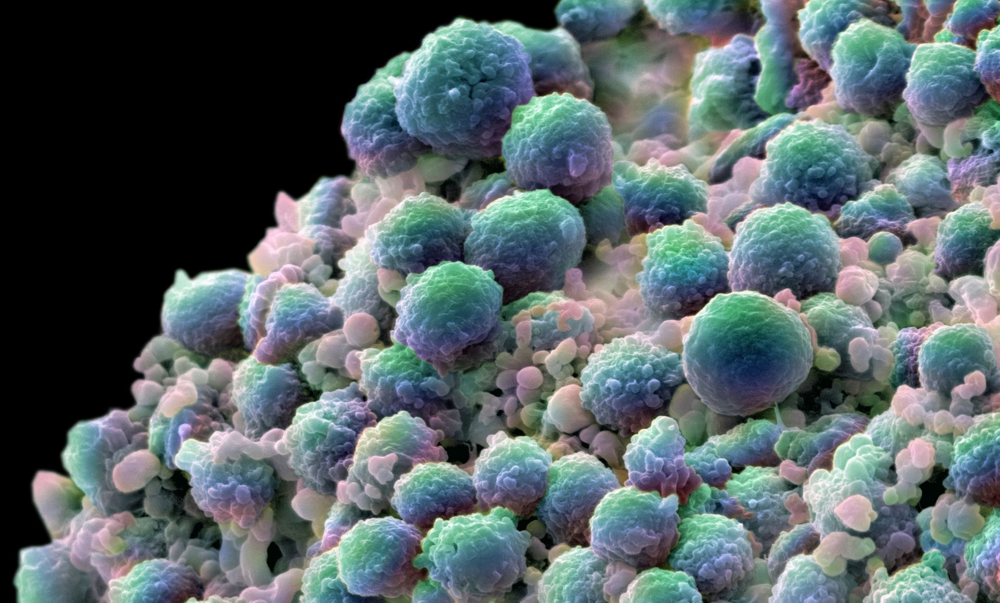

Decayline is when someone has a liking of decay in their body. Resting mostly as in areas in their brain, decay becomes a mixture of semens, milks, and meat, that is enjoyed in the body with Decayline. The wrong milks and semen form bodies of decay in their body and it becomes a disease where they begin to enjoy the feeling of the decay.
Mixtures of dopamines and the decay form this disease and it results in some acts of cannibalism, which is why we speak about it here. This is a highly dangerous and contagious disease for people that are eating with meat in their diets. They are more prone to getting the disease if meat and dairy are accepted forms of foods in their diets.
The worst elements are from when those with Decayline are enjoying meat or having such infidelity as being with other partners and enjoying to swallow out their sexual fluids as they detox them in the form of ailment. The problem with Decayline is that they enjoy to have Decayline.

Rather than see Cancer as a form of Genetic issue, seeing these microscopic elements as a form of Decayline from the enjoyment of consuming decay over time is much more humane and productive.
← Navigation